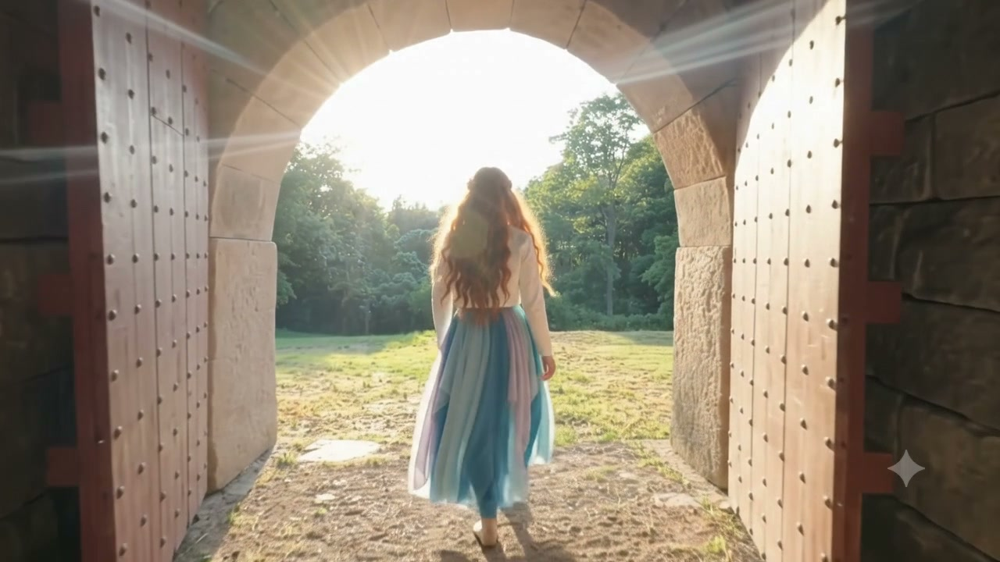
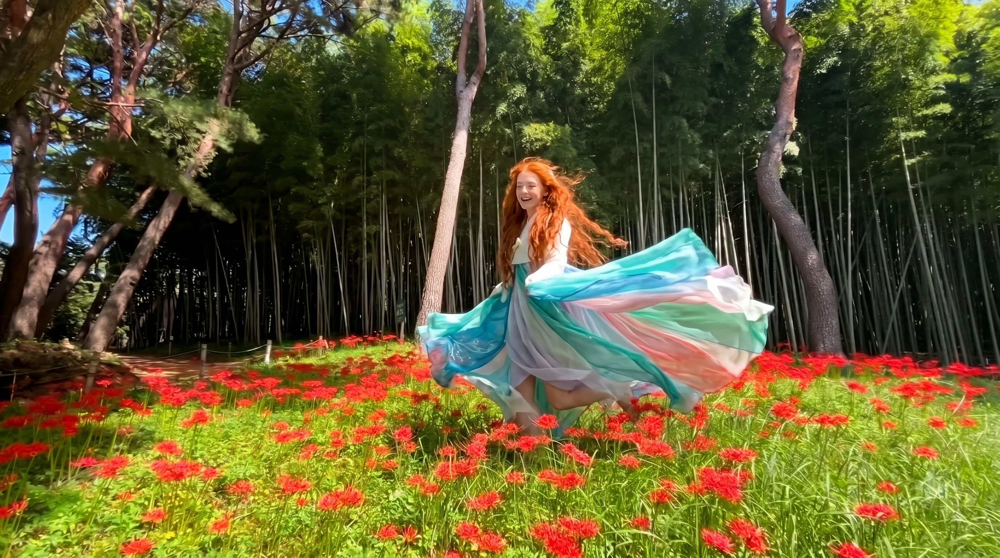
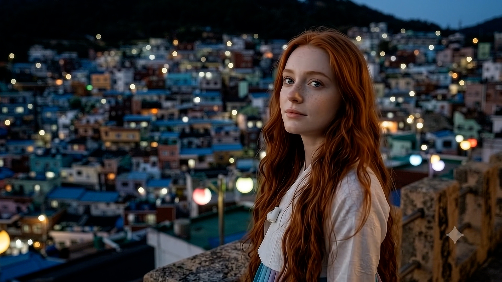
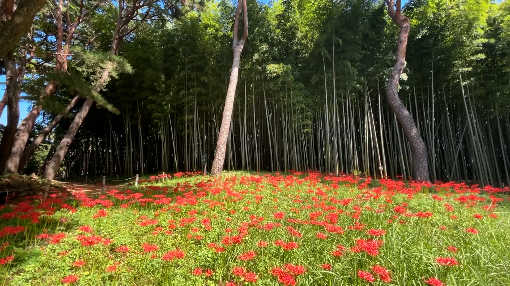

10 / Video
Mermaid Tourism
Busan, seen anew through a mermaid's eyes.
"바다를 건너온 인어의 눈에, 부산은 모든 것이 신기하겠지."
바다 너머에서 온 여행자, 인어의 시선으로 새롭게 담은 부산 홍보 영상
Video
Main Film
Overview
Project Overview
Mermaid Tourism은 부산을 알리기 위해 만든 홍보 영상입니다. 제가 살고 있어 누구보다 잘 아는 곳, 부산에 숨겨진 전통적인 장소, 바다만큼이나 아름다운 부산의 산, 그리고 외국인 관광객이 가장 많이 찾는 곳을 골라 하나의 여행 코스로 엮었습니다.
영상 속 인어는 외국인 관광객을 상징합니다. 인어가 바다를 건너 한 번도 가보지 못한 육지로 놀러 오듯, 외국인들도 바다와 하늘을 건너 부산을 찾아와 처음 보는 풍경에 한눈에 마음을 빼앗기는 모습을 담고자 했습니다.
"바닷속이 아닌, 바다 위에서 내려다보는 바다는 인어에게 얼마나 신기할까?" 이 질문이 영상을 만들게 된 출발점입니다.
배경은 모두 실제 장소를 직접 찾아가 촬영했고, 그 위에 AI로 만든 인물을 합성해 인어가 실제로 부산을 여행하는 듯한 장면을 완성했습니다.
Storyboard
Project Storyboard
기획 의도, 송도 거북섬 전설을 재해석한 이야기, 네 곳의 여행 코스, 캐릭터 디자인과 비주얼 무드까지 프로젝트 전체를 한 장에 정리한 스토리보드입니다.

Route
인어의 부산 여행 코스
부산의 바다에서 시작해 산과 숲을 지나, 밤의 골목까지. 부산의 하루를 따라가는 네 곳입니다.
01 송도 케이블카 · 송도공원
여행은 제가 사는 송도에서 시작합니다. 사람들의 관심을 끌 수 있도록 송도에 전해 내려오는 거북섬 전설을 가져왔고, 송도에서 가장 많이 즐기는 관광인 '송도 해상 케이블카'와 케이블카를 타면 도착하는 송도공원의 모습을 담았습니다. 늘 바닷속에 살던 인어가 처음으로 바다 위에서 바다를 내려다보는 장면입니다.

02 금정산성 서문
마치 차원을 이동하듯 장면이 바뀌어 도착한 곳은 금정산성 서문입니다. 전통적인 건축물이지만 인적이 드물어 더욱 신비로운 곳입니다. 외국인에게는 우리나라의 전통 문화도 새롭게 다가올 것이라 생각해, 사람들이 잘 모르는 장소를 찾아 소개하고 싶었습니다. 인어의 의상을 한복으로 정한 것도 이 때문입니다. 물론 한복 치마로 인어의 꼬리를 표현하려는 의도도 함께 담았습니다.

03 아홉산 숲
다음은 대나무 숲으로 유명한 아홉산 숲입니다. 송도와는 부산의 끝과 끝에 있는 장소로, 부산 구석구석의 매력을 알리고 싶었습니다. 영화 촬영지로도 쓰인 곳으로, 저렴한 입장료로 잘 관리된 숲과 꽃밭, 한옥(관미헌)까지 함께 즐길 수 있어 선정했습니다.

04 감천문화마을
마지막 장소는 외국인 관광객이 가장 많이 찾는 감천문화마을입니다. 낮에도 볼거리가 많지만, 저녁이 되면 골목을 비추는 조명이 아름다운 야경을 만들어 냅니다. 부산의 아침부터 밤까지, 하루를 온전히 보여주기에 좋은 곳이라 생각해 여행의 마지막으로 선정했습니다.
Legend Animation
송도 거북섬 전설
본편과 별도로 제작한 애니메이션입니다. 부산 송도 거북섬에 전해 내려오는 전설을 바탕으로, 본편 속 인어가 어떤 이야기에서 왔는지를 담았습니다.
The Legend
옛날, 한 어부가 거센 폭풍을 피해 바닷가 동굴로 몸을 숨겼습니다. 그곳에서 어부는 상처를 입은 채 쓰러져 있던 용인족 여인을 만나게 됩니다. 어부는 여인을 지극정성으로 간호했고, 그렇게 함께 지내는 동안 두 사람은 서로 사랑에 빠졌습니다.
인간이 되어 어부와 함께 살아가고 싶었던 여인은 아버지인 용왕을 찾아가 결혼을 허락받고, 인간이 되는 방법을 전해 듣습니다.
"천 일 동안 달의 기운을 받으며 기도하되, 결코 햇빛을 보아서는 안 된다."
여인은 매일 밤 달빛 아래에서 정성껏 기도했지만, 마지막을 앞두고 바다 괴물이 나타나 기도를 방해했습니다. 결국 여인은 사람도 용도 아닌 반인반용의 모습이 되고 말았습니다. 뒤늦게 달려온 어부는 괴물을 물리쳤지만, 괴물과 함께 깊은 바닷속으로 가라앉아 끝내 돌아오지 못했습니다.
이를 안타깝게 여긴 용왕은 두 사람의 사랑을 기리며 바다 위에 섬 하나를 만들었고, 그것이 지금의 송도 거북섬이라고 전해집니다.
Reinterpretation
이 영상은 전설 속 반인반용이 된 여인을 '인어'로 새롭게 해석한 상상에서 출발합니다.
반인반용이 된 여인의 후손들은 이제 인어라 불리며 바닷속에서 살아가고, 인간과 나눈 사랑 이야기는 그들 사이에서 오래된 전설처럼 전해 내려옵니다.
그리고 한 어린 인어가 궁금해집니다. 전설 속 여인이 그토록 그리워하던 육지는 과연 어떤 곳일까? 그 호기심을 안고 어린 인어가 처음으로 육지 구경을 나서는 이야기, 이것이 Mermaid Tourism의 콘셉트입니다.
Making
How It Was Made
직접 촬영한 실제 장소와 AI로 만든 인물을 조합해, 인물이 실제로 그곳을 여행하는 장면을 만들었습니다.
Before & After
Direct Footage → Final Scene
왼쪽은 직접 촬영한 원본, 오른쪽은 인물을 합성한 최종 장면입니다.

Direct Footage
직접 촬영한 장면
영상의 배경이 된 장소들을 직접 촬영한 원본 장면입니다.